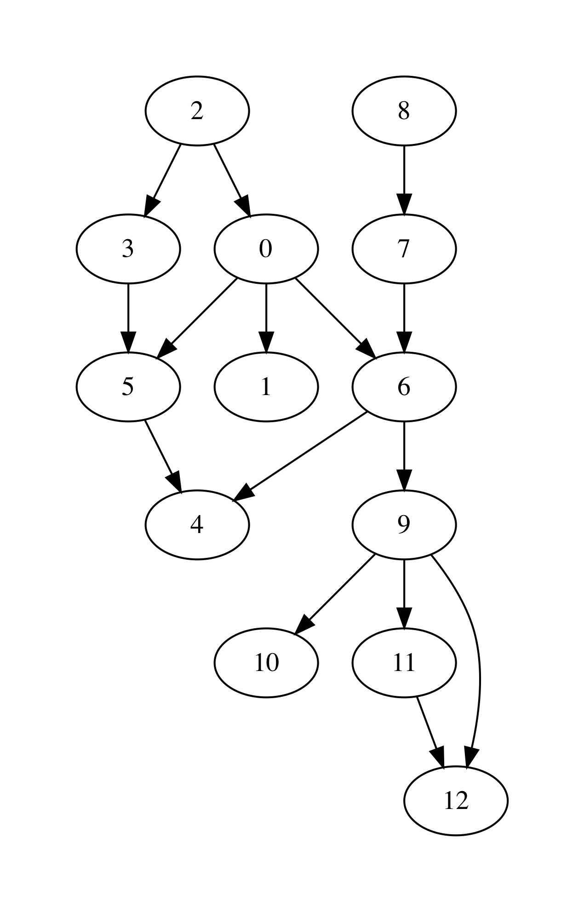

Graphs as Linked Data Structures¶
- File
Graphs.ml
Let us consider a more efficient implementation of graphs as a linked heap-based data structure. The implementation features some redundancy, in order to provide an efficient access to the nodes of a graph as well as their adjacent neighbours. The implementation will rely on data structures developed previously: hash-tables and sets, represented via BSTs.
We start by defining the data type for nodes:
module LinkedGraphs = struct
(*************************************************)
(* Nodes *)
(*************************************************)
type 'a node = {
id : int;
value : 'a ref;
next : int list ref;
prev : int list ref
}
let get_value n = !(n.value)
let get_next n = !(n.next)
let get_prev n = !(n.prev)
let add_prev node src =
let prev' = get_prev node |>
List.filter (fun n -> n <> src) in
node.prev := src :: prev'
let add_next node dst =
let next' = get_next node |>
List.filter (fun n -> n <> dst) in
node.next := dst :: next'
(* More types and functions are coming here *)
end
Each node stores its identifier (an integer), a payload value, as well as lists of “previous” and “next” nodes in the graph (initially empty).
We now define a graph as follows:
(*************************************************)
(* Auxiliary definitions *)
(*************************************************)
open BST
open BetterHashTable
module Set = BinarySearchTree
module NodeTable =
ResizableListBasedHashTable(struct type t = int end)
module EdgeTable =
ResizableListBasedHashTable(struct type t = int * int end)
type 'a set = 'a Set.tree
(*************************************************)
(* Working with Graphs *)
(*************************************************)
type ('a, 'b) graph = {
next_node_id : int ref;
nodes : int set;
node_map : (int * 'a node) NodeTable.hash_table;
edges : (int * int) set;
edge_labels : ((int * int) * 'b) EdgeTable.hash_table
}
That is, a graph contains:
- a counter
next_node_idused to allocate identifiers for newly added nodes; - a set (represented via BST)
nodesof all node identifies; node_mapfor mapping node identifiers to node objects;- a set of edges (
edges); - a hash map of edge labels (
edge_labels).
The graph structure defined just above allows to access the set of predecessors/successors of a node in a constant time, as opposed to linear one with the list-based representation. Consider the following utility functions:
(* Graph size *)
let v_size g = !(g.next_node_id)
let e_size g = BinarySearchTree.get_size g.edges
let get_nodes g = Set.elements g.nodes
(* Refer to the node in the graph *)
let get_node g i = get_exn @@ NodeTable.get g.node_map i
let get_succ g n =
let node = get_node g n in
get_next node
let get_prev g n =
let node = get_node g n in
get_prev node
let node_in_graph g n =
let nodes = g.nodes in
Set.search nodes n <> None
let edge_in_graph g src dst =
let nodes = g.edges in
Set.search nodes (src, dst) <> None
As the linked graph structure combines five conceptually “overlapping” components, it needs to be maintained with a lot of care, in order not to introduce any discrepancies in the representations.
Creating new empty graph is easy:
let mk_graph _ = {
next_node_id = ref 0;
nodes = Set.mk_tree ();
node_map = NodeTable.mk_new_table 10;
edges = Set.mk_tree ();
edge_labels = EdgeTable.mk_new_table 10
}
Adding a node requires allocating a new identifier for it, registering it in both the set of node identifiers, and the node map:
let add_node g v =
let new_id = !(g.next_node_id) in
g.next_node_id := !(g.next_node_id) + 1;
let node = {
id = new_id;
value = ref v;
next = ref [];
prev = ref [];
} in
(* Register node *)
let _ = Set.insert g.nodes new_id in
(* Register node payload *)
NodeTable.insert g.node_map new_id node
Adding an edge requires modifying the corresponding node instances to account for new predecessors and successors:
let add_edge g src dst =
assert (node_in_graph g src && node_in_graph g src);
(* Register edge *)
let _ = Set.insert g.edges (src, dst) in
(* Add information to individual nodes *)
let src_node = get_exn @@ NodeTable.get g.node_map src in
let dst_node = get_exn @@ NodeTable.get g.node_map dst in
add_prev dst_node src;
add_next src_node dst
We can also set a new label to an edge (src, dst) as follows:
let set_edge_label g src dst l =
assert (node_in_graph g src && node_in_graph g src);
assert (edge_in_graph g src dst);
(* Register label *)
EdgeTable.insert g.edge_labels (src, dst) l
Switching between graph representations¶
As we already have reading/writing implemented for AL-based graphs, let us implement conversion between them and linked representations. The following function, for instance, converts a simple AL-based graph (with arbitrary node payloads) to a linked representation:
let from_simple_adjacency_graph (ag : ('a, 'b) AdjacencyGraphs.graph) =
let g = mk_graph () in
(* Add nodes *)
for i = 0 to ag.size - 1 do
let v = snd @@ List.find (fun (n, _) -> n = i) !(ag.node_payloads) in
add_node g v;
done;
(* Add edges *)
for i = 0 to ag.size - 1 do
ag.adj.(i) |>
List.map (fun n -> (i, n)) |>
List.iter (fun (src, dst) -> add_edge g src dst)
done;
(* Add edge labels *)
List.iter (fun ((src, dst), l) -> set_edge_label g src dst l)
!(ag.edge_labels);
g
Conversely, the following functionsobtains an adjacency graph from a linked representation:
let to_adjacency_graph g =
let size = v_size g in
let ag = AdjacencyGraphs.mk_graph size in
(* Set node payloads *)
Set.elements g.nodes |>
List.iter (fun n ->
let node = get_exn @@ NodeTable.get g.node_map n in
AdjacencyGraphs.set_payload ag n (get_value node));
(* Add edges *)
let edges = Set.elements g.edges in
List.iter (fun (src, dst) -> AdjacencyGraphs.add_edge ag src dst) edges;
(* Add edges labels *)
List.iter (fun (s, d) ->
match EdgeTable.get g.edge_labels (s, d) with
| None -> ()
| Some l -> AdjacencyGraphs.set_edge_label ag s d l) edges;
ag
We can now put those functions to use for getting linked graphs immediate from the strings and files:
let parse_linked_int_graph ls =
AdjacencyGraphs.adjacency_int_graph_of_strings ls |>
from_simple_adjacency_graph
let read_simple_linked_graph_from_file filename =
let ag = AdjacencyGraphs.read_simple_graph_shape_from_file filename in
from_simple_adjacency_graph ag
Testing graph operations¶
One advantage of AL-based representation is that it makes it considerably easier to test graphs for certain properties. For instance, the following function checks that two AL-represented graphs have the same topology assuming the exact correspondence of the nodes (i.e., the same sets of node identifiers, and edges between them):
let same_shape (ag1 : ('a, 'b) AdjacencyGraphs.graph)
(ag2 : ('a, 'b) AdjacencyGraphs.graph) =
assert (ag1.size = ag2.size);
let n = ag1.size in
let comp x y = if x < y
then - 1
else if x > y
then 1 else 0 in
for i = 0 to n - 1 do
let adj1 = ag1.adj.(i) |> List.sort comp in
let adj2 = ag1.adj.(i) |> List.sort comp in
assert (adj1 = adj2)
done;
true
We can use it to check that out AL-to-linked-and-back conversion preserves the graph shape. Take the following graph:
let medium_graph_shape =
["13";
"0 1";
"0 6";
"0 5";
"2 0";
"2 3";
"3 5";
"5 4";
"6 4";
"7 6";
"8 7";
"6 9";
"9 10";
"9 11";
"9 12";
"11 12"]
We can now make sure that the following test succeeds:
let%test _ =
let ag = AdjacencyGraphs.adjacency_int_graph_of_strings medium_graph_shape in
let g = LinkedGraphs.from_simple_adjacency_graph ag in
let ag' = LinkedGraphs.to_adjacency_graph g in
same_shape ag ag'
We can also try out the conversion machinery for the sake of producing nice GraphViz images:
utop # let g = LinkedGraphs.parse_linked_int_graph medium_graph_shape;;
utop # let ag = LinkedGraphs.to_adjacency_graph g;;
utop # graphviz_no_payload ag "medium.dot";;
Now, by running from the terminal:
dot -Tpdf medium.dot -o medium.pdf
we obtain the following image:
{kind=link}